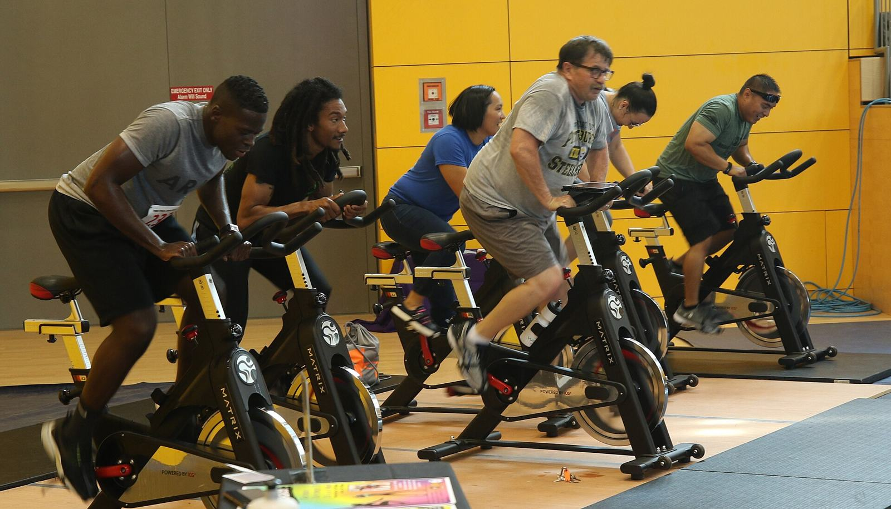

She sweats out 1.4 liters. Her blood barely changes.
An athlete trains for 90 minutes in a hot gym and does not drink. She loses 1.4 liters of fluid as sweat and breath. Her blood stays almost the same. This page shows the feedback loop that protects her.

Hard exercise without water. An endurance athlete trains for 90 minutes in a heated gym and does not drink water. She loses 1.4 liters of fluid through sweat and breath. Even so, the concentration of her blood rises by only 16 mOsm/kg (288 to 304), about 6%, because her kidneys save water.
The body controls its water balance and how concentrated the blood is. This control is called osmoregulation. The set point is near 285 to 295 mOsm/kg. Cells that shrink or swell cannot work properly, and this threatens the chemical reactions in cells and the nervous system.
Concentration and the kidney's job
Blood concentration measures how many dissolved particles each kilogram of water holds. Water moves by osmosis toward the more concentrated side.
Each kidney holds about a million tiny filters. Your blood is filtered, and about 180 liters of fluid a day enters the kidney tubes. To prevent fatal dehydration, the kidneys must return over 99% of this water to the blood.
The kidneys control how much water leaves your body. The hormone ADH tells them how much water to return to the blood.
Many students think salty blood makes the body release more water. The loop works the other way. Salty blood raises ADH, and ADH makes the kidneys keep water.
The ADH feedback loop
A feedback loop that uses a hormone fine-tunes how much water the kidneys return:
- Stimulus: Sweat removes water from the body. The blood becomes more concentrated and rises above the 290 mOsm/kg set point.
- Sensors: Sensors in the hypothalamus notice that the blood is more concentrated.
- Control center and hormone: The hypothalamus signals the pituitary gland. The pituitary releases ADH (antidiuretic hormone) into the blood.
- Effector: ADH travels to the kidneys. It tells the kidney tubes to let more water pass back into the blood.
- Response: The kidneys return more water to the blood and make a small volume of concentrated urine (up to 1200 mOsm/L). ADH cuts the water lost in urine. Blood concentration returns to normal once she drinks, and ADH release stops.
EnrichmentHow a kidney cell lets more water through
Extra depth. The rest of the lesson works without it.
When ADH reaches a kidney cell, the cell adds water channels to its surface. These channels are called aquaporins. Water passes through the channels from the urine tube into the blood.
When ADH falls, the cell removes the channels, and less water returns to the blood.
Test the kidney loop
Make the athlete sweat, and watch the loop protect her blood. Time runs fast: 30 minutes take 10 seconds. The clock stops at the marks so you can record.
What does the kidney change to keep the water in your blood steady?
- ADH
- Water
- Urine, darker when concentrated
- Normal blood, 285 to 295 mOsm/kg
- Bloodstream
- Press Start over, then press Sweat 1.4 L. Look for: ADH dots stream to the kidney, and the urine gets darker and smaller. The clock stops at 30, 60 and 90 min. Press Record at each stop, then press Play.
- At 90 min, press Drink 1 L. Look for: blood concentration falls toward the normal band, ADH falls, and the urine turns pale and plentiful. Press Record after 30 more minutes.
Use your evidence
Data from the trial
Students collected this data during a 90-minute exercise trial with no fluid replacement (Singapore American School consensus dataset). The simulation passes through these numbers.
| Elapsed Time (min) | Cumulative Sweat (L) | Blood concentration (mOsm/kg) | ADH in blood (pg/mL) | Urine Flow (mL/min) | Urine concentration (mOsm/L) |
|---|---|---|---|---|---|
| 0 (Baseline) | 0.00 | 288 | 1.8 | 1.4 | 380 |
| 30 min | 0.45 | 292 | 3.4 | 0.8 | 620 |
| 60 min | 0.95 | 297 | 5.8 | 0.4 | 950 |
| 90 min (Exhaustion) | 1.40 | 304 | 8.2 | 0.25 | 1180 |
Checkpoints
Test what you can predict before you see the explanation.
Checkpoint 1: Salty snacks and no water
Checkpoint 2: What happens with too little ADH
Evidence, claim, reasoning
Use the data in section 04 to write a full explanation of how the athlete's body defends its water balance.
Explain the 90-minute trial
Between 0 and 90 minutes of exercise, the athlete loses 1.40 liters of sweat. Her blood concentration rises by only 16 mOsm/kg (from 288 to 304 mOsm/kg). Her urine flow drops from 1.4 mL/min to 0.25 mL/min, and her urine concentration rises from 380 to 1180 mOsm/L.
Prompt: Explain how the hormone system and the kidneys work together through negative feedback to protect the athlete's blood volume.
- Claim (1 mark): You say sweat loss makes the blood more concentrated and starts an ADH loop.
- You say the kidneys then save water and make concentrated urine.
- Evidence (1 mark): You cite ADH rising from 1.8 to 8.2 pg/mL, more than four times.
- You cite urine flow falling 82% and urine concentration more than tripling (380 to 1180 mOsm/L).
- Sensor and hormone (1 mark): You say sensors in the hypothalamus notice the concentrated blood.
- You say the pituitary then releases ADH.
- Kidney response (1 mark): You say ADH makes the kidneys return more water to the blood.
- You say this cuts the water lost in urine and holds blood concentration near 290 mOsm/kg.